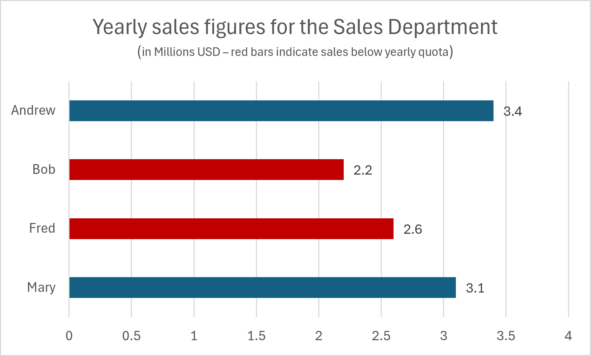

All technologies.
The objective of this technique is to describe the failure that occurs when an image uses color differences to convey information, but the text alternative for the image does not convey that information. This can cause problems for people who are blind, have low vision, or have color vision deficiency, because they will not be able to perceive the information conveyed by the color differences.
A bar chart of sales data is provided as an image. The chart includes yearly sales figures for four employees in the Sales Department.

The text alternative for the image says:
A bar chart displaying the yearly sales figures for
the Sales Department. Mary sold 3.1 Million; Fred, 2.6 Million;
Bob, 2.2 Million; and Andrew, 3.4 Million. The red bars indicate sales
that were below the yearly quota.
This text alternative fails to provide the information which is conveyed by the color red in the image. The alternative should indicate which people did not meet the sales quota, instead of describing the use of color.
In addition, as the chart relies on color to convey information visually,
it fails for sighted users that struggle with differentiating colors, as
the two colors used (blue and red) have a minimal contrast ratio difference
between them (below 3:1).
For all images in the content: